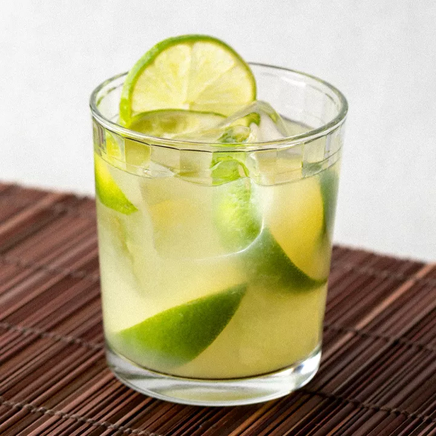
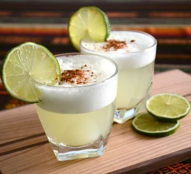
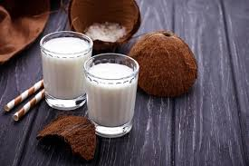
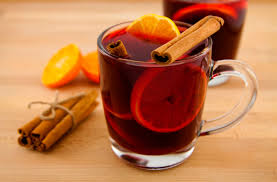
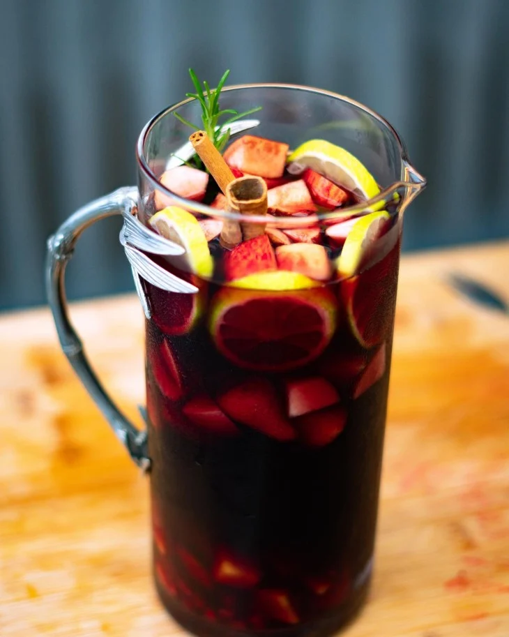
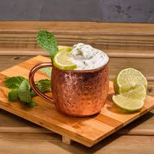
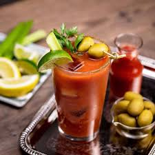
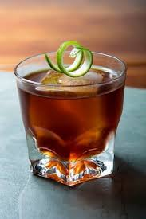

1. Em um copo duplo,amasse as fatias de limão com o açúcar;
2. Encha o copo com gelo, adicione a cachaça e mexa rapidamente;
3. Decore com a rodela de limão.


Pisco Sour
50ml de pisco;
50ml de suco de limão;
1/2 colher de sopa de xaropede açúcar;
1 clara de ovo;
Gelo;
Amargos;
Rodelas de limão.
Modo de preparo:
1. Despeje o pisco, suco de limão e o xarope de açúcar em uma coqueteleira ou liquidificador com a clara de ovo e adicione um grande punhado de gelo;
2. Agite vigorosamente por 20-25 segundos ou bata por 10 segundos e depois coe em 2 copos;
3. Adicione algumas gotas de bitters no topo de cada coquetel e decore com umaa rodela de limão.
Batida de coco
1 lata de leite condensado;
1 lata de leite de coco;
Vodka (a gosto);
Cubos de gelo (a gosto).
Modo de preparo:
1. Coloque em um liquidificador o leite condensado, o leite de coco, a vodka e gelo;
2. Bata tudo por 3 minutos e está pronto.


Quentão
1 litro de cachaça;
600ml de água;
1 e 1/2 xícaras de chá de água;
3 e 1/2 xícaras de chá de açúcar;
2 colheres de sopa de gengibre picado;
-------------------
Casca de 2 laranjas;
Casca de 1 limão;
1 maçã sem sementes cortada em cubos;
1/2 colher de sopa de cravos-da-índia;
2 pedaços de canela em pau.
Modo de preparo:
1. Coloque o açúcar, as cascas de laranja e de limão, a maçã, o gengibre, os cravos e as canelas em uma panela e leve ao fogo baixo, mexendo sempre, até obter uma calda cor de caramelo;
2. Apague o fogo e acrescente a cachaça e a água;
3. Acenda o fogo novamente e deixe a bebida cozinhar por 20 minutos em fogo baixo.Sirva.
Sangria
1 garrafa de vinho tinto;
1 dose de Cointreau ou licor de laranja;
1 dose de Lilet ou aperitivo licoroso;
1/2 dose de xarope de gengibre;
Morangos, romã, manga, maçã, pêssego e limão a gosto e picados;
1 litro de água tônica;
Ramos de alecrim e pau de canela a gosto.
Modo de preparo:
1. Inicie picando as frutas. Reserve;
2. Em uma jarra, adicione o vinho, Cointreau e Lilet;
3. Adicione as frutas e mexa;
4. Coloque gelo e adicione água tônica;
5. Finalize com alecrim e canela;
6. Sirva e bom apetite.


Moscow Mule
50ml de vodka;
3 colheres (chá) de xarope de gengibre;
100 ml de água com gás;
Suco de 1/2 limão;
1/2 colher de sopa de açúcar;
Gelo;
Modo de preparo:
1. Em uma caneca, coloque o gelo e a vodka;
2. Adicione o suco de limão, o açúcar e o xarope de gengibre;
3. Complete essa mistura com a água com gás e mexa suavemente;
4. Se preferir, finalize com uma rodela de limão.
Blood Mary
1 xícara vodca (xícara de café);
2 xícaras suco de tomate (xícara de café);
1/4 xícara suco de limão-siciliano (xícara de café);
1 colher (chá) molho inglês;
2 colheres (chá) Tabasco
Gelo a gosto
Pimenta-do-reino e sal a gosto
Aipo, limão-siciliano e azeitonas para decorar a gosto
Modo de preparo:
1. Misture todos os ingredientes (exceto o sal e a pimenta).;
2. Reserve. Coe a mistura sobre gelo em um copo bordeado com sal e pimenta.


Rabo de Galo
50 ml de cachaça;
25 ml de vermute tinto;
25 ml de Cynar;
Twist de limão taiti.
Modo de preparo:
1. Misture todos os ingredientes em um copo, com ou sem gelo;
Use de preferência uma coqueteleira e um bom coador,
tenha gelo de sobra e por ultimo seja criativo(a) na hora de adoçar, use mel, açúcar ou ate geleia.